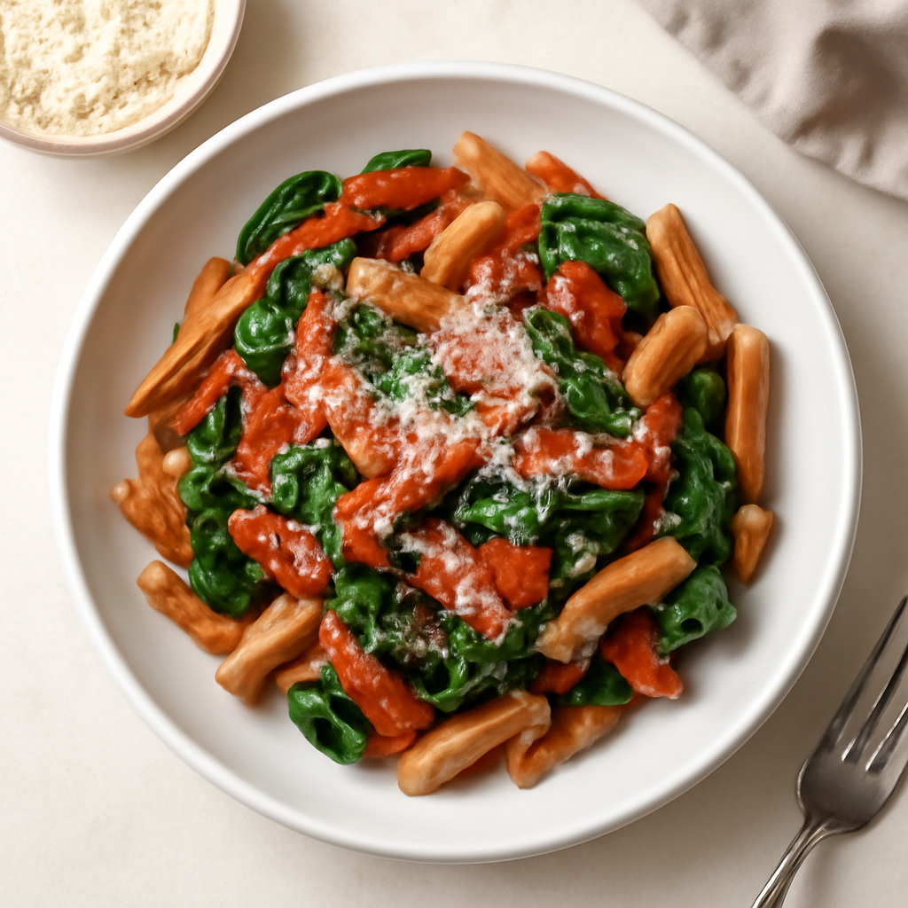

Friday — Whole Wheat Pasta with Spinach and Tomato Sauce

Cook Time: 30 minutes
Method: Oven
pastavegetarianeasy
Ingredients for 6
- 1 lb whole wheat pasta
- 4 cups fresh spinach
- 2 cups organic tomato sauce
- 1 tablespoon olive oil
- Salt to taste
- Parmesan cheese (optional)
Instructions
- Cook pasta according to package instructions. Drain.
- In a large bowl, combine cooked pasta, spinach, tomato sauce, and olive oil. Mix well.
- Transfer to a baking dish, top with cheese, and bake at 350°F (175°C) for 10-15 minutes until heated through.
Toddler Notes
- Ensure pasta is cut into small pieces; mix well to avoid clumping.
← Back to weekly plan